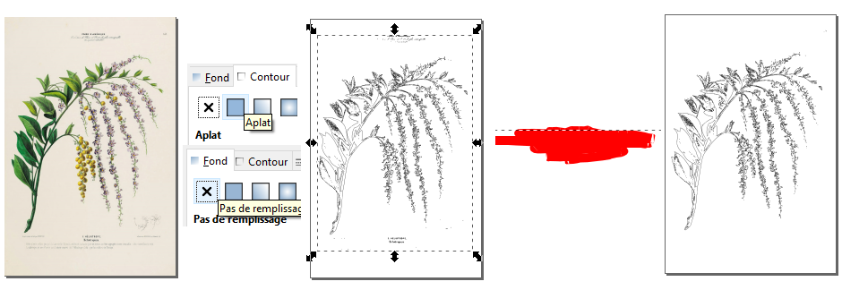

1 - Ouvrir Inkscape

- Ouvrez votre image dans Inkscape (dessin scanné, gravure ...) puis vectorisez là : chemin > vectoriser un objet matriciel. Une fenêtre s'ouvre, réglez les paramètres à votre convenance puis validez.
- Un vecteur se crée au dessus de votre image, supprimez cette dernière puis sélectionnez le vecteur. Dans la fenêtre "fond et contour", supprimer le remplissage (fond) et mettez le contour en aplat. Avec l'outil gomme, retirez les éléments indésirables. Sauvegardez en .svg. Vous pouvez en créer plusieurs à partir d'autres images.
1 - Ouvrir Blender
- Importez votre humain : File > Import > Collada (Default) .dae, sélectionnez votre fichier puis validez (de même pour importer les vecteurs sauf qu'il faudra choisir Scalable Vector Graphics .svg)
- Choisissez ensuite la partie humaine que vous souhaitez hybrider. Vérifiez que vous êtes en "edit mode" et que le bouton "limit selection to visible" est activé. Sélectionnez ce que vous voulez supprimer avec votre souris en maintenant la touche ctrl enfoncée.
- La partie sélectionnée devient orange, cliquez sur la touche clavier "suppr." une fenêtre "delete" s'ouvre, puis cliquez sur "vertices"
- Importez vos vecteurs puis placez les comme vous le souhaitez par rapport à la partie humaine, utilisez les touches clavier R ou S pour les faire tourner ou redimensionner.
- Choisissez l'"object mode", dans la fenêtre de droite, onglet "data" (la courbe) shape > 3D puis geometry > extrude > entrez un chiffre, puis un autre jusqu'à ce que l'épaisseur vous semble correcte.
- Ensuite revenez dans shape et sélectionnez 2D pour fermer votre forme.
Vous pouvez ensuite retravailler ces hybrides en "sculpt mode", les animer ...
{kind=link}
{kind=link}
{kind=link}
{kind=link}
{kind=link}